1.はじめに
段取りくんは、中古車販売会社の整備業務を「ピット予約・店間移動・業者連携・顧客予約」のひとつのクラウドにまとめる業務システムです。本資料では、何ができて、どこをどう操作すれば、どんな動きになるかを画面とともに説明します。
1.1 段取りくんとは
整備ピットを持つ店舗と持たない店舗が混在する販売会社向けに、整備の段取りを一元管理するクラウドシステムです。「電話・FAX・付箋・Excel」で属人化していた段取り業務をシステム化し、業者連携と顧客予約までを 1 つの画面で扱えるようにします。
1.2 主要機能
ピット予約共有
全店舗のピット空き状況をカレンダー 1 枚で。レーン種別・作業内容ごとの稼働も可視化。
店間整備予約
ピットがない店舗から、ピットがある店舗へ即予約。移動パターン 4 種（片道 / 往復 / 引取のみ / 三点）に対応。
業者通知の自動化
店間移動の業者依頼を自動メール + マイページで通知。対応不可時は次候補へ再打診。
顧客来店予約
お客様は 24 時間 Web から予約可能。電話受付の代行入力にも対応。
1.3 利用者と役割
- 本部管理者
- 全店舗・全設定の管理。マスター設定・権限・通知ルール・操作記録閲覧
- 店長
- 自店舗の予約管理・店間整備依頼の確定承認・店舗設定の編集
- 工場長
- レーン稼働・整備作業のスケジュール管理。日次作業ボードの確認
- 店舗スタッフ
- 顧客予約・店間整備予約の作成、業者状況の確認、ステータス更新
- 整備士
- ピット予約と作業内容の確認、作業開始・完了報告、実績入力
- 回送業者
- 自社宛の依頼確認・対応可否回答・引取/搬入/返却の進捗報告（業者ポータル）
- 顧客
- Web 来店予約・予約変更・キャンセル（認証コード/署名トークン経由）
1.4 業務全体図
店舗・顧客・業者・工場の 4 アクターを段取りくんが中央でつなぎます。
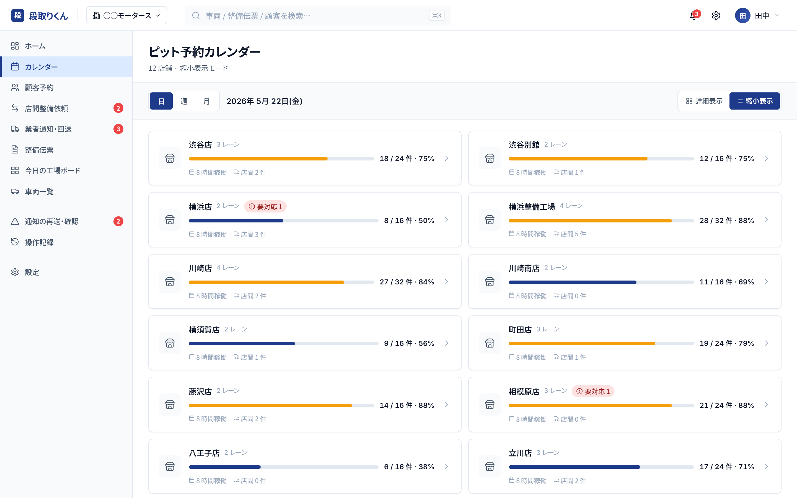
↑ 多店舗縮小ビュー画面（C.2+）。本部から全店舗の状況を 1 画面で把握。
1.5 画面マップ
段取りくんは 5 種類の画面群で構成されます。詳細は §4 画面リファレンスを参照。
- 管理画面（14 画面）
- 店舗スタッフ・店長・本部・工場長が日常的に使う画面。ダッシュボード、カレンダー、店間整備依頼、業者通知、整備伝票、車両一覧、通知失敗運用、操作記録 等
- 業者ポータル（7 画面）
- 回送業者向け。通知一覧、新規依頼（スマホカード版含む）、依頼詳細、対応可否回答、進捗更新
- 顧客予約画面（10 画面）
- モバイル中心の予約フロー（6 ステップ）+ 確認 / 変更 / キャンセル / コード再送
- 設定画面（11 画面）
- 会社・店舗・レーン・作業メニュー・業者・通知ルール・権限・本人確認 など 11 領域のマスター設定
- 印刷物（3 種）
- 整備伝票 PDF / 回送依頼書 PDF / 店間移動指示書 PDF
2.業務シナリオ別ガイド
日常業務でよく発生する 8 つのシナリオについて、画面とともにステップを追って説明します。各シナリオは「想定シーン → 関わる人 → 全体フロー → ステップ詳細（スクショ + 注釈 + 動作結果）」の統一テンプレートです。
S01 顧客から電話で予約を受ける
平日午前 10:30、お客様から店舗に電話。「来週土曜の午後にオイル交換をお願いしたい」との問い合わせ。受付スタッフは電話を切らずに、段取りくんで予約を入力します。
- 店舗受付スタッフ
- システムを操作して予約を入力
- 顧客
- 電話相手、システム操作なし
全体フロー
- サイドナビ「顧客予約」を開く
- 一覧画面上部の「+ 電話受付で追加」を選ぶ
- 顧客情報・車両情報を聞き取りながら入力
- 空き日時カレンダーから土曜午後を選択
- 予約確定 → 顧客に予約番号を伝える
ステップ詳細
サイドナビ「顧客予約」を開く
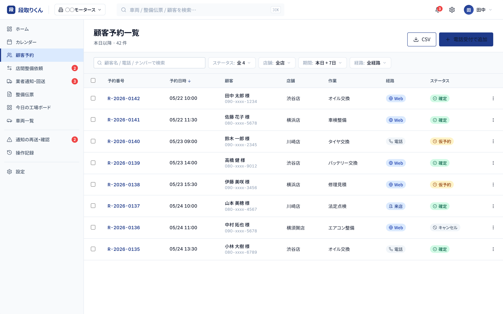
- 1左サイドナビ「顧客予約」（人型アイコン）をクリック
- 2上部に検索バー / ステータスフィルタ / 店舗フィルタ / 期間フィルタ / 経路フィルタ
- 3各行：予約番号 / 予約日時 / 顧客名 / 店舗 / 作業 / 経路（Web / 電話 / 来店）/ ステータスバッジ
「+ 電話受付で追加」 → 電話受付モードへ
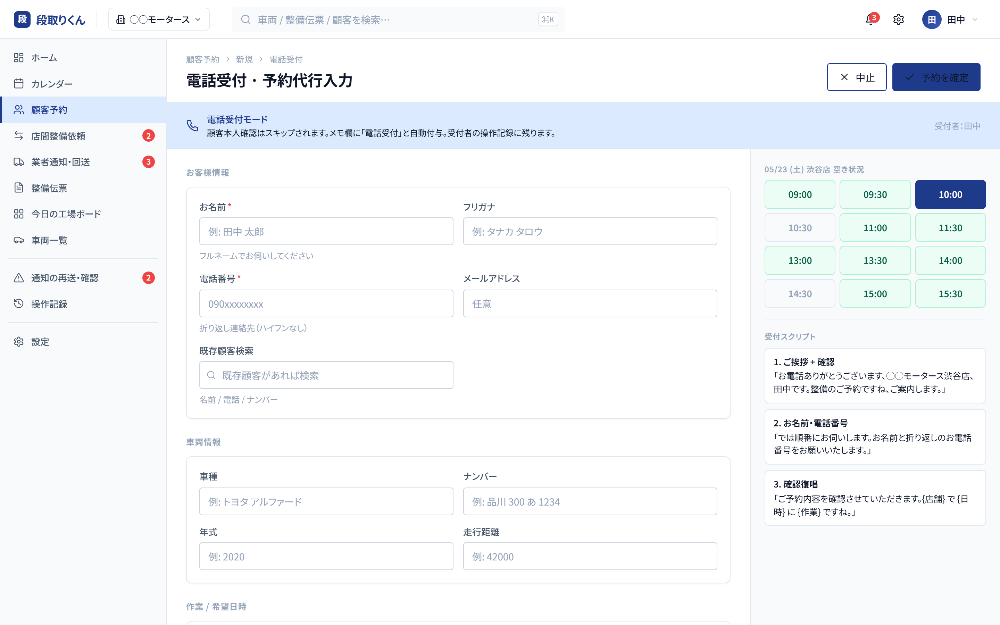
- 1右上「+ 電話受付で追加」ボタンをクリックで電話受付モード起動
- 2画面上部に「電話受付モード」帯が表示され、顧客本人確認をスキップ + メモ欄に「電話受付」自動付与の旨を案内
- 3右サイドパネルに「受付スクリプト」（挨拶 / 名前確認 / 内容復唱）が表示され、聞き漏らし防止
- 4右上に「受付者：田中」と現在ログインユーザー名を表示（操作記録に紐付け）
顧客情報・車両情報を聞き取り入力
- 1お名前 / フリガナ / 電話番号（必須、ハイフンなしで入力 → 自動補完）
- 2メールアドレスは任意（電話受付なので空欄可）
- 3「既存顧客検索」欄でナンバー・電話番号から既存顧客を呼び出すと、車両情報まで自動補完
- 4車両情報：車種 / ナンバー（例
品川 300 あ 1234）/ 年式 / 走行距離 - 5メモ欄に自動で「電話受付」が付与され、受付者の操作記録に残る
空き日時カレンダーから日時選択
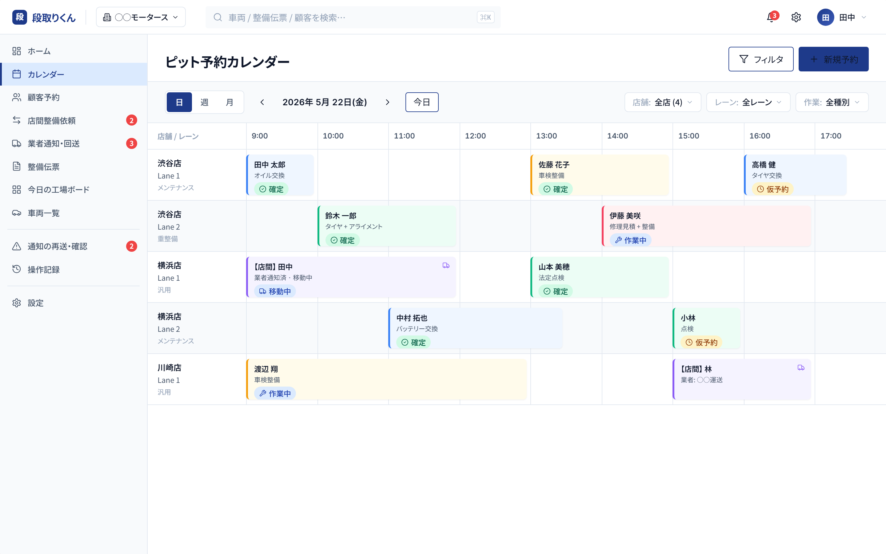
- 1右サイドの「希望日 空き状況」または「日時を選ぶ」からカレンダーが開く
- 2緑＝空き / グレー＝満枠 / 薄＝営業時間外（凡例で明示）
- 3希望日（土曜）クリック → その日の時間スロット一覧が表示
- 4「14:00 オイル交換（約 30 分）」スロットを選択
予約確定 → 顧客に予約番号を伝える
- 1右上「予約を確定」ボタンをクリック
- 2一覧トップに新規予約が表示される（ステータス「確定」緑バッジ、経路「電話」）
- 3予約番号（例
R-2026-0143）が画面上部に表示 - 4メールアドレス入力時は確認メールが自動送信される（電話受付では任意）
S02 顧客が Web から自分で予約する
夜 22 時、顧客がスマホで段取りくんの顧客予約 URL を開きます。希望する作業を選び、空き日時を確認して予約。本人確認の認証コードを入力すると予約完了です。
- 顧客
- スマホで予約フォームを操作
- システム
- 空き枠検索・認証コード送信・確認メール送信を自動実行
全体フロー（6 ステップ）
- 顧客が URL を開き、店舗を選ぶ
- 希望する作業メニューを選ぶ
- 空き日時カレンダーから選択
- 顧客情報・車両情報を入力
- 認証コードがメールで届く → 6 桁を入力
- 予約完了。確認・変更・キャンセル URL がメールで届く
ステップ詳細
店舗を選ぶ
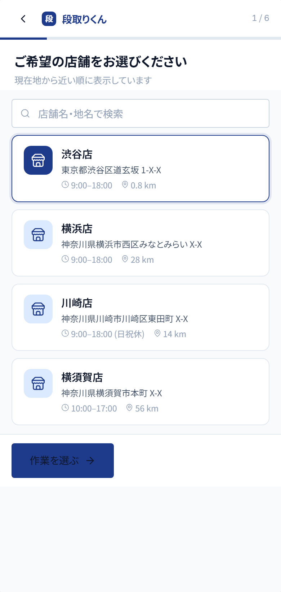
- 1上部にブランドロゴ + ステップ進行表示「1 / 6」
- 2店舗カード一覧（営業時間と距離付き）
- 3店舗名・地名で検索可能
- 4選択中の店舗はカード枠が濃紺でハイライト
作業メニューを選ぶ
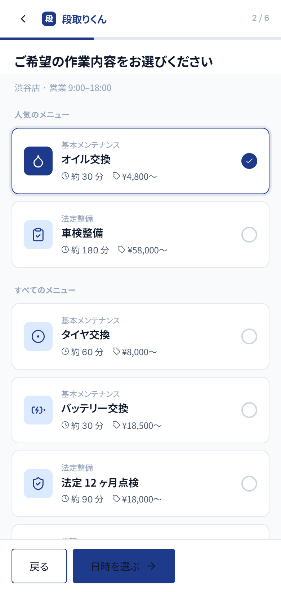
- 1ステップ進行「2 / 6」、上部に選択中店舗の営業時間表示
- 2「人気のメニュー」と「すべてのメニュー」のグループ表示
- 3各カード：カテゴリ / メニュー名 / 所要時間（例「約 30 分」）/ 料金目安（例「¥4,800〜」）
空き日時カレンダーから選択
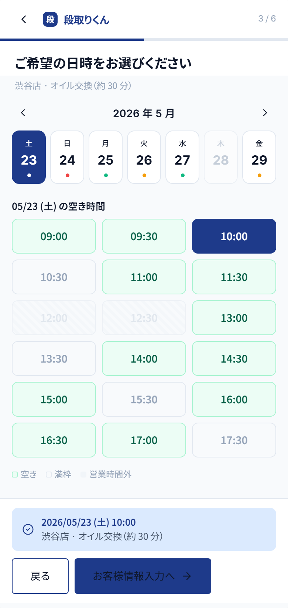
- 1ステップ進行「3 / 6」、月切替（前月 ← → 翌月）
- 2曜日 × 日付の横並びピッカー、各日付下に空き状況のインジケータドット
- 3日付タップで時間スロットの格子表示
- 4凡例：「空き / 満枠 / 営業時間外」を色で区別
- 5選択中の枠は濃紺で大きく表示、画面下部に選択内容サマリ
顧客情報・車両情報を入力
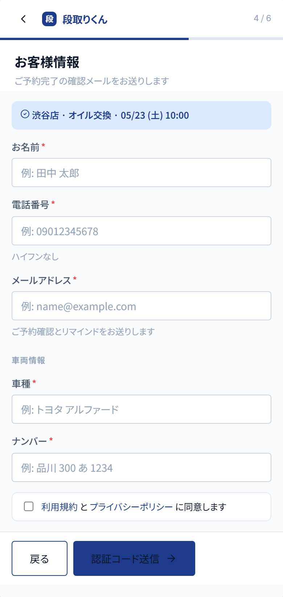
- 1ステップ進行「4 / 6」、選択中の予約内容が上部に固定表示
- 2お名前・電話番号・メールアドレス（必須）
- 3車両情報：車種・ナンバー
- 4「利用規約」「プライバシーポリシー」への同意チェック
- 5下部「認証コード送信」ボタン
認証コードを入力
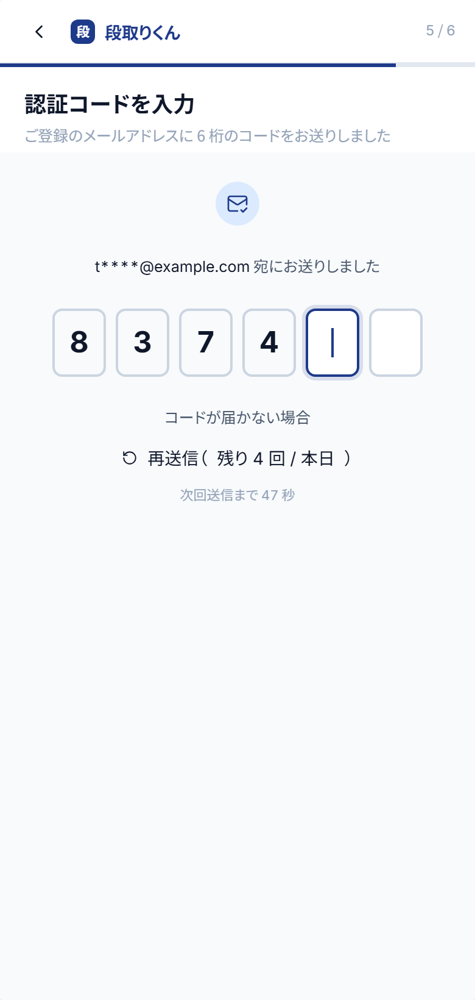
- 1ステップ進行「5 / 6」、「認証コードを入力」見出し
- 2送信先メールアドレス（マスク表示
t****@example.com）の確認 - 36 桁の正方形ボックス、タップで OS のキーボード起動、OTP 自動入力にも対応
- 4「再送信（残り 4 回 / 本日）」リンク、レート制限を可視化
- 5次回送信までのカウントダウン表示
予約完了
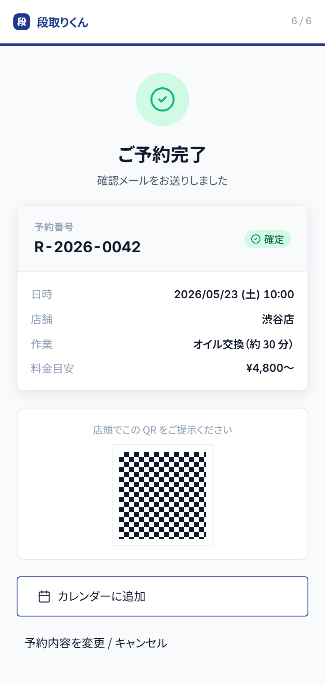
- 1大きなチェックマーク + 「ご予約完了」
- 2予約番号（例
R-2026-0042）・日時・店舗・作業・料金目安がカード表示、ステータス「確定」 - 3「店頭でこの QR をご提示ください」案内 + QR コード画像
- 4「カレンダーに追加」ボタン
- 5下部に「予約内容を変更 / キャンセル」リンク（署名付き URL で個別認証）
S03 自店にピット空きがない → 店間整備依頼
渋谷店スタッフがお客様の車検整備を受けましたが、当日のピットがすべて埋まっています。横浜整備工場に空きがあったので、店間整備として依頼します。
- 店舗スタッフ（渋谷店）
- 店間整備依頼を作成、業者を選んで通知まで実行
- 顧客
- 既に来店済み or 電話受付済み（このシナリオでは操作なし）
全体フロー（7 ステップ）
- サイドナビ「店間整備依頼」を開く
- Step 1: 整備伝票番号と車両情報を入力
- Step 2: 作業メニュー選択 → 空き日時・レーン検索
- Step 3: 店間移動の有無と移動パターンを選ぶ
- Step 3 続き: 業者を選択（単一指名 / 一斉打診 / スポット招待）
- 「予約確定 + 業者通知」ボタンで一気に確定
- 業者状況を C.5 業者通知・回送管理で確認
ステップ詳細
店間整備依頼を開く
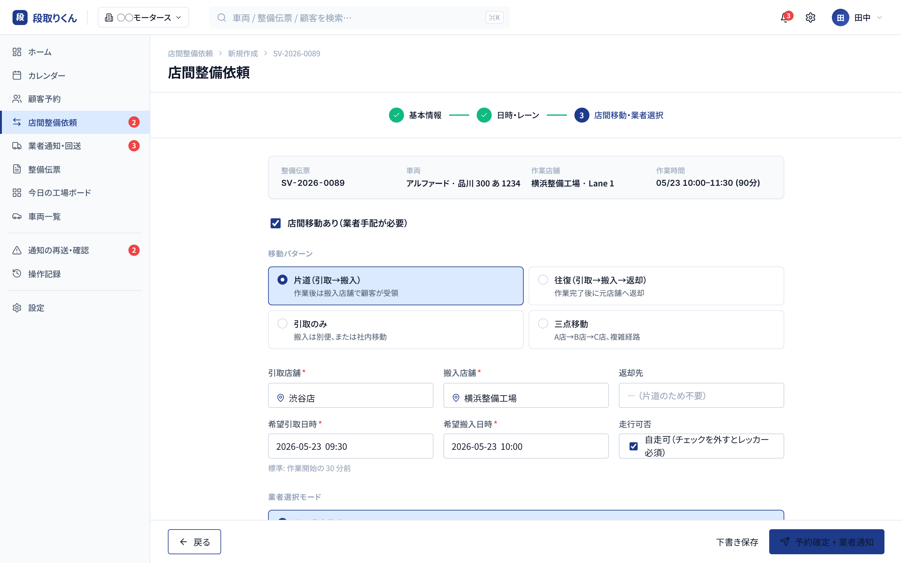
- 1サイドナビ「店間整備依頼」（左右矢印アイコン、要対応バッジ付き）
- 2上部ステッパー「1 基本情報 → 2 日時・レーン → 3 店間移動・業者選択」
- 3進捗インジケータで現在のステップを濃紺ハイライト
- 4下部に「下書き保存」「予約確定 + 業者通知」が常時表示
基本情報入力（整備伝票・車両・顧客）
- 1整備伝票番号（既存検索または新規作成、例
SV-2026-0089） - 2車両管理番号 / 車種 / ナンバー（既存検索で自動補完）
- 3顧客名（既存検索）
- 4作業カテゴリ・作業メニュー・作業内容詳細
日時・レーン選択（空き枠検索）
- 1受付店舗（渋谷店）/ 作業店舗（横浜整備工場）を選択
- 2標準作業時間 / バッファ時間がメニュー設定から自動表示
- 3空き枠検索結果が他店も含めて表示（例：横浜整備工場 Lane 1 が 10:00–11:30 で空き）
- 4緑のスロットをクリックで選択
店間移動の有無と移動パターン
- 1「☑ 店間移動あり（業者手配が必要）」をチェック
- 2移動パターン 4 種：◉片道（引取→搬入）/ ○往復（引取→搬入→返却）/ ○引取のみ / ○三点移動
- 3引取店舗（渋谷店）/ 搬入店舗（横浜整備工場）/ 返却先（パターンに応じて表示・非表示）
- 4走行可否（自走可のチェックを外すと「レッカー必須」フラグが自動立つ）
- 5希望引取日時 / 希望搬入日時 / 希望返却日時（標準は作業開始の 30 分前）
業者選択
- 1業者選択モード：◉単一業者指名 / ○複数業者一斉打診 / ○スポット業者招待
- 2業者ドロップダウン（対応エリア・店舗・曜日でフィルタ済み、登録済みの業者一覧から選択）
- 3「○○運送（渋谷-横浜エリア対応）」を選択
- 4確定モード：◉自動確定（業者対応可で即確定）/ ○手動確定（店舗承認後に確定）
予約確定 → 業者へ自動通知
- 1大きな Primary ボタン「予約確定 + 業者通知」をクリック
- 2確定時に裏側で同時実行：① 予約レコード作成 ② 整備伝票紐付け ③ 業者依頼レコード作成 ④ 通知配送キューに投入
- 3完了トースト「業者へ通知しました」
業者状況を確認
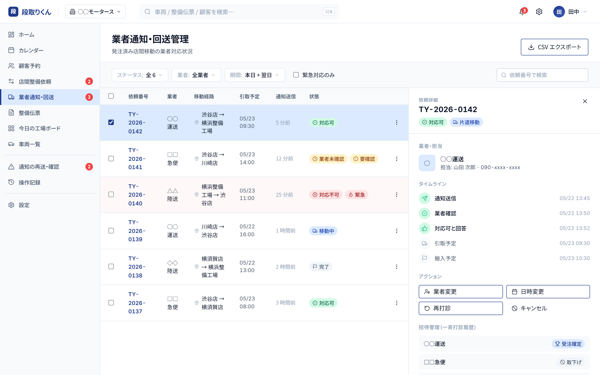
- 1サイドナビ「業者通知・回送」へ移動
- 2一覧に新しい依頼（例
TY-2026-0142）が表示 - 3列：依頼番号 / 業者 / 移動経路 / 引取予定 / 通知送信 / 状態
- 4行クリックで右側の詳細スライドオーバーが開き、業者・タイムライン・アクション（業者変更 / 日時変更 / 再打診 / キャンセル）が確認できる
S04 店間移動の業者通知が自動で飛ぶ
S03 で店舗が予約確定した直後、業者「○○運送」の山田さんのスマホに新規依頼のメールが届きます。山田さんは業者ポータルにログインして依頼内容を確認、対応可と回答。店舗側にはリアルタイムで進捗が反映されます。
- システム
- 通知配送キューから自動でメールを送信
- 業者（山田さん）
- スマホで業者ポータルを操作
- 店舗スタッフ
- C.5 で業者状況を確認する側
全体フロー（6 ステップ）
- 通知配送キューから自動でメール送信
- 業者がスマホでメールを受信、ログイン URL をタップ
- 通知一覧に新規依頼が表示
- 依頼詳細を確認（移動経路 / 車両情報 / 注意事項）
- 同意モーダルにチェック → 「対応可と回答」
- 店舗側 C.5 にリアルタイムで反映
ステップ詳細
通知配送キューから自動配信
- 1予約確定と同時に、通知配送キューに重複防止キー付きでレコード生成
- 2配送ワーカーがキューを順次処理し、メール配信プロバイダ経由で送信
- 3送信成功は配送ログに記録され、業者・件名・送信時刻が残る
- 4送信失敗時は最大 5 回まで自動再送、それでも失敗した場合は「通知の再送・確認」画面へ
業者がスマホで通知メール受信
- 1メール件名：「【新規回送依頼】TY-2026-0142 渋谷店 → 横浜整備工場」
- 2本文：依頼番号 / 移動経路 / 希望日時 / ポータルログイン URL
- 3URL タップでログイン画面へ。業者ユーザーは事前発行のアカウントでサインイン
業者の通知一覧に新規依頼が表示
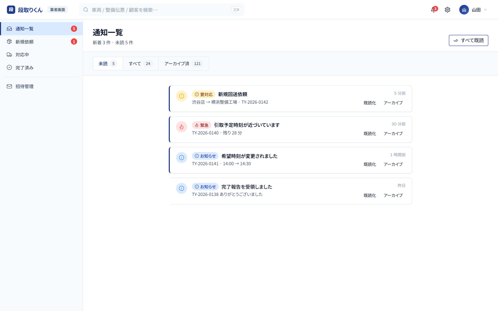
- 1「未読 5」バッジ + フィルタタブ「未読 / すべて / アーカイブ済」
- 2新規依頼カード（「要対応」黄色バッジ）
- 3カード内容：「新規回送依頼」「渋谷店 → 横浜整備工場 ・ TY-2026-0142」「5 分前」
- 4緊急（引取予定が近い）案件は「緊急」赤バッジで強調
- 5各カードに「既読化」「アーカイブ」アクションリンク
依頼詳細を確認
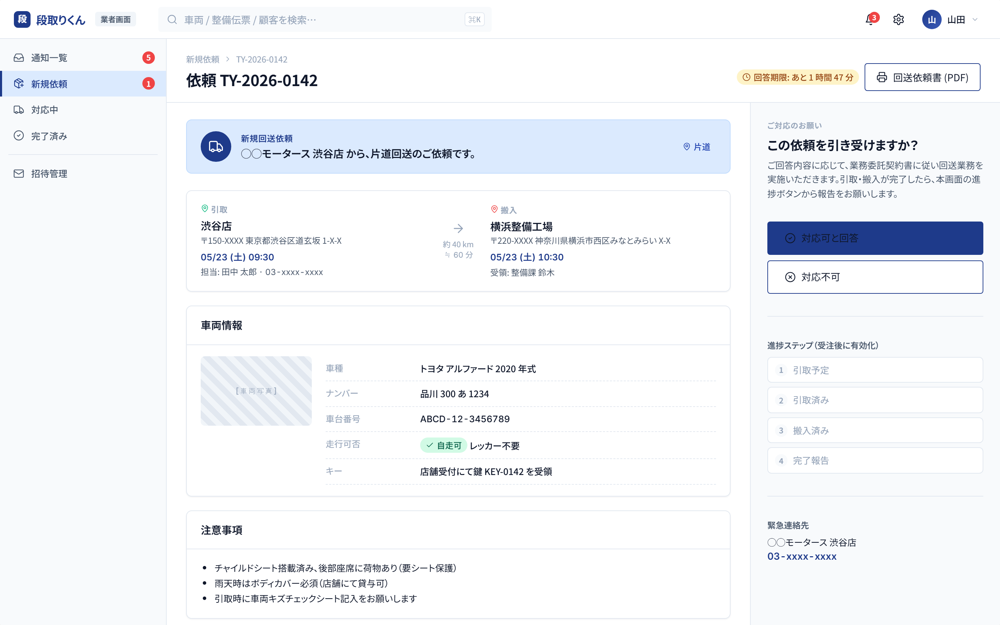
- 1上部に「回答期限：あと 1 時間 47 分」黄バッジ + 「回送依頼書（PDF）」出力ボタン
- 2引取セクション（渋谷店 + 住所 + 希望日時 + 担当者連絡先）
- 3搬入セクション（横浜整備工場 + 同上）+ 経路距離・所要時間の参考表示
- 4車両情報（車種 / ナンバー / 車台番号
ABCD-12-3456789/ 走行可否 / キー受領場所KEY-0142） - 5注意事項（チャイルドシート搭載済み、雨天時のボディカバー指定 等）
- 6右サイドに「対応可と回答」「対応不可」の 2 ボタン + 進捗ステップ（受注後に有効化）
同意モーダル + 対応可と回答
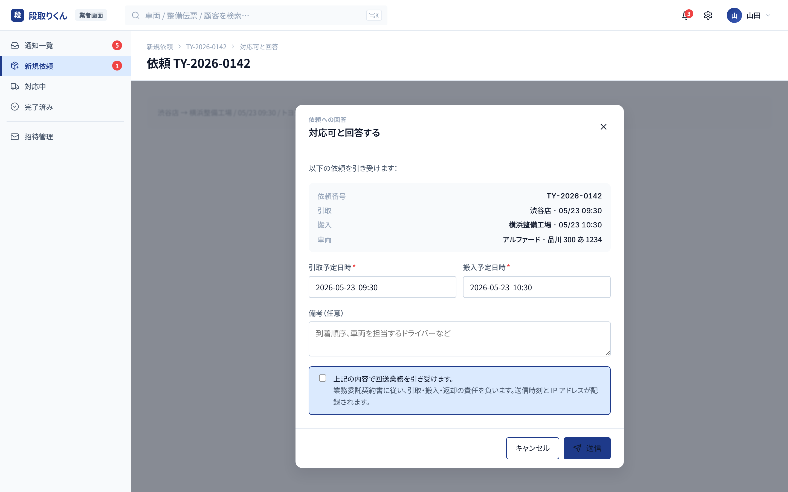
- 1モーダル見出し「対応可と回答する」
- 2依頼内容サマリ（依頼番号・引取・搬入・車両）
- 3引取予定日時 / 搬入予定日時の入力（希望日時で自動プリセット）
- 4備考欄（任意、到着順序やドライバー名を記入）
- 5必須チェックボックス：「上記の内容で回送業務を引き受けます。業務委託契約書に従い、引取・搬入・返却の責任を負います。送信時刻と IP アドレスが記録されます。」
- 6「送信」ボタン（チェックが入るまで非活性）
店舗側にリアルタイムで反映
- 1C.5 一覧の状態列が「業者未確認」→「対応可」に変化
- 2行クリックで詳細スライドオーバー：業者名 / 通知送信日時 / 業者確認日時 / 対応可否 / 引取予定 / 搬入予定 / 現在ステータス
- 3アクション：「業者変更」「日時変更」「再打診」「キャンセル」（手動確定モード時は「予約確定」も）
S05 業者「対応不可」→ 次業者へ再打診
別の依頼で、業者「□□急便」に依頼したが 30 分後に「対応不可」と返答が来ました（理由：当日の他案件と重複）。店舗スタッフは C.5 で気付き、次の業者に再打診します。
- 業者 A（□□急便）
- 対応不可と回答
- 店舗スタッフ
- フォールバック判断、次業者を選択
- 業者 B（△△陸送）
- 再打診先、最終的に対応可と回答
全体フロー（5 ステップ）
- 業者 A が「対応不可」と回答 → ステータス「対応不可」へ遷移
- 店舗側に通知（一覧で赤バッジ強調）
- 詳細スライドオーバーから「再打診」を選択
- 業者 B を選んで再通知
- 業者 B から対応可応答 → 確定
ステップ詳細
業者 A が対応不可と回答
- 1業者ポータルの依頼詳細で「対応不可」を選択
- 2理由ドロップダウン（「当日の他案件と重複」「対応エリア外」「車両仕様で対応不可」「その他」）
- 3自由入力欄に補足コメント
- 4「送信」
店舗側で対応不可に気付く
- 1該当行が赤背景で強調表示（例：TY-2026-0140 の行）
- 2状態バッジ「対応不可」（赤）+ 「緊急」フラグ（引取予定が近い場合）
- 3ダッシュボード C.1 の KPI カード「対応不可」にもカウントされる
- 4本部管理者宛のアラートメールも飛ぶ（通知ルールによる）
詳細スライドオーバー → 再打診
- 1該当行クリック → 右側の詳細パネルに業者情報 + 拒否理由が表示
- 2アクションボタン群：「業者変更」「日時変更」「再打診」「キャンセル」
- 3「再打診」をクリック
- 4次候補業者リストが表示（対応エリア・店舗・曜日マッチで自動レコメンド）
業者 B が応答
- 1業者 B の通知一覧に新規依頼が届く（招待管理に再打診回数も記録）
- 2依頼詳細を確認
- 3同意モーダルで「対応可と回答」
確定
- 1C.5 の状態「対応不可」→「対応可」に遷移
- 2業者欄が「□□急便」→「△△陸送」に変化
- 3変更履歴タブに「業者変更：□□急便 → △△陸送 / 理由：拒否」と記録
S06 業者がスマホから完了報告（写真添付）
業者の山田さんが当日 09:34 に渋谷店で車両を引き取り、横浜整備工場へ移動。搬入完了後にスマホから完了報告 + 写真添付を行います。
- 業者（山田さん）
- 外出先からスマホで操作
- 店舗スタッフ
- 完了通知を受け取り、写真証跡を確認
全体フロー（5 ステップ）
- 業者がスマホで業者ポータルの依頼詳細を開く
- 進捗ステップを「引取済み」に更新
- 横浜到着後、「搬入済み」へ更新 + 写真添付（カメラ起動）
- 写真撮影チェックリスト（外観 / 内装 / メーター）
- 「搬入完了報告」ボタン → 店舗側に通知
ステップ詳細
業者ポータルの依頼詳細を開く（モバイル）
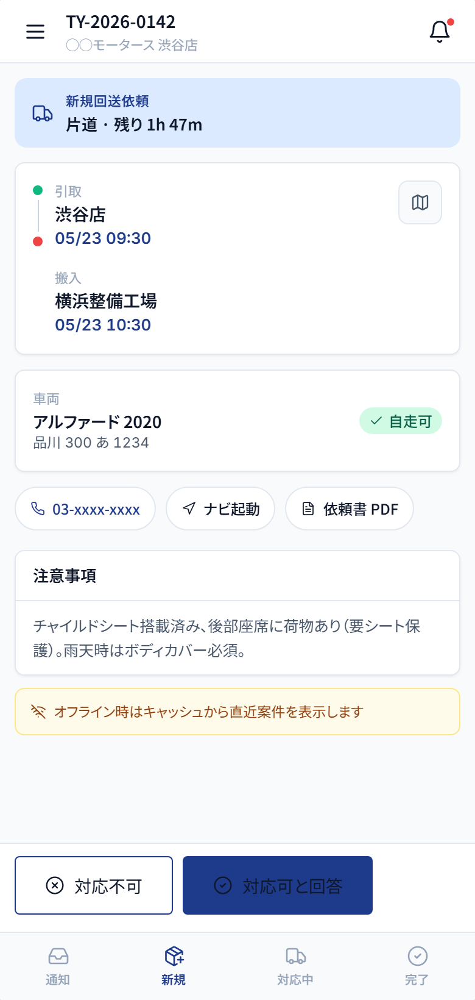
- 1スマホ表示の依頼詳細（フル幅レイアウト、片手操作前提）
- 2上部に「TY-2026-0142 渋谷店 → 横浜整備工場」と「残り 1h 47m」
- 3引取・搬入の住所と時刻、車両情報（アルファード 2020・ナンバー）
- 4下部 thumb-zone に「電話」「ナビ起動」「依頼書 PDF」
- 5オフライン時はキャッシュから直近案件を表示する旨のバナー
進捗ステップを更新
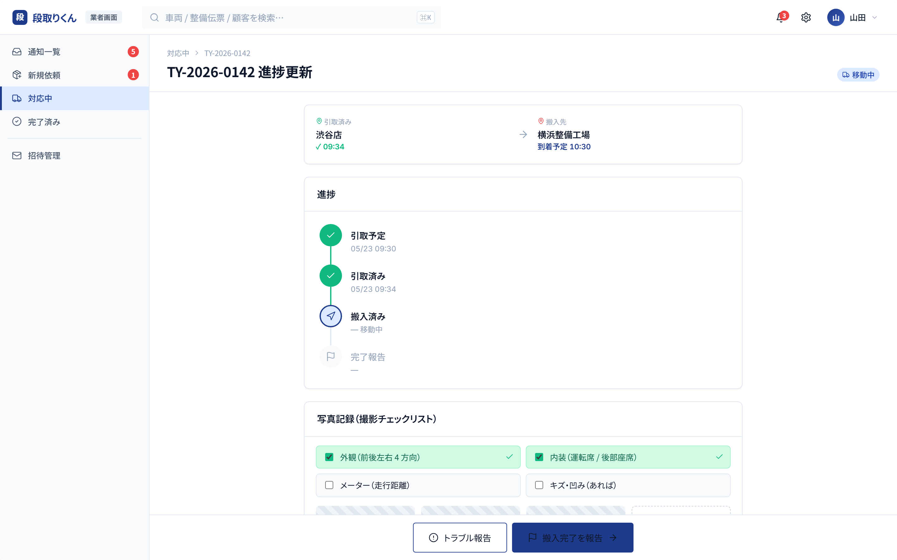
- 1進捗タイムライン：引取予定 → 引取済み → 搬入済み → 完了報告
- 2「引取済み」をタップするとタイムスタンプが自動記録（例：05/23 09:34）
- 3引取完了は店舗側 C.5 にリアルタイムで反映
搬入時に写真添付（カメラ起動）
- 1「写真記録（撮影チェックリスト）」セクションに 4 項目のチェックボックス
- 2各項目タップでスマホ背面カメラが起動（HTML5 のカメラ呼び出し）
- 3撮影必須項目：外観（前後左右 4 方向）/ 内装（運転席 / 後部座席）/ メーター（走行距離）/ キズ・凹み（あれば）
- 4各項目チェック後に「✓ 撮影済」マーク + サムネイル表示
搬入完了報告
- 1必須撮影項目（外観・内装）をクリアすると「搬入完了を報告」ボタンが活性化
- 2ボタンタップで状態「移動中」→「搬入済み」へ
- 3備考欄に任意でメモ（「車内荷物確認済み」等）
- 4異常時は「トラブル報告」ボタンで店舗・本部に即時エスカレーション
店舗側で確認
- 1C.5 の状態が「搬入済み」へ遷移したことを確認
- 2詳細スライドオーバーに「写真 4 枚添付」リンク
- 3写真をクリックで拡大表示（証跡確認）
S07 通知配送が失敗、運用画面から再送
業者の登録メールアドレスが古かったため、新規依頼通知のメールがバウンスしました。最大 5 回の自動再送も失敗。通知失敗運用画面に表示され、運用担当者が原因確認 + メールアドレス修正 + 手動再送を行います。
- システム
- 自動再送 → 5 回失敗 → 「通知の再送・確認」画面に表示
- 運用担当者
- 失敗原因の確認、業者マスター修正、手動再送
全体フロー（5 ステップ）
- ダッシュボードに「通知失敗 2 件」アラート表示
- 「通知の再送・確認」画面を開く
- 失敗詳細を確認（失敗理由：バウンス）
- 業者マスターでメールアドレスを修正
- 手動再送 → 成功
ステップ詳細
ダッシュボードに通知失敗アラート
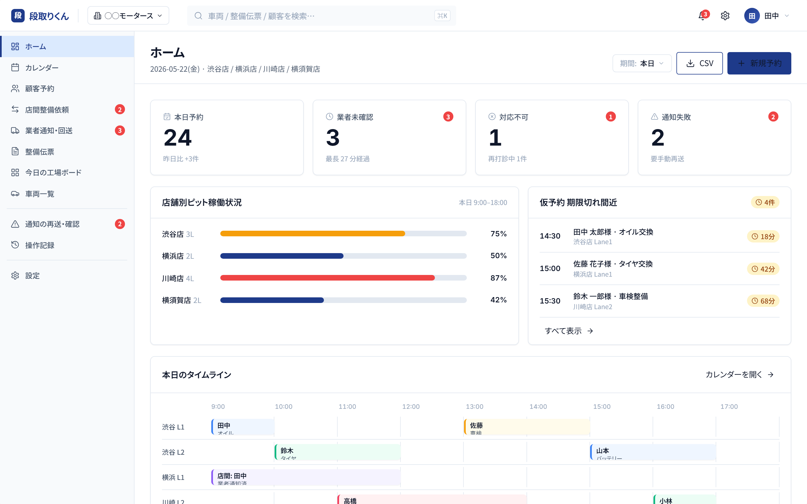
- 1KPI カード「通知失敗 2」（赤バッジ）
- 2カードクリックで通知失敗運用画面へジャンプ
- 3サイドナビ「通知の再送・確認」にも要対応バッジが付く
通知失敗運用画面を開く
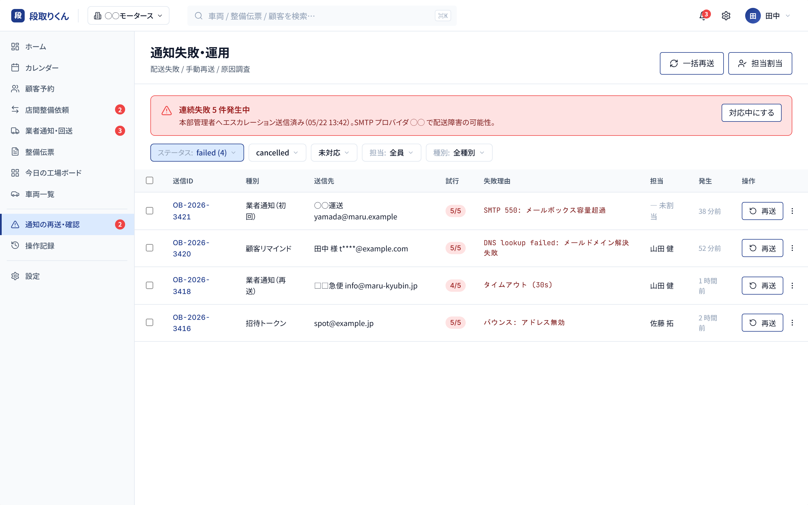
- 1上部に連続失敗時の警告バナー（赤）「連続失敗 5 件発生中。本部管理者へエスカレーション送信済み。配送プロバイダで配送障害の可能性。」
- 2フィルタ「失敗 / 諦め / 未対応」+ 担当 + 種別
- 3一覧：送信 ID / 種別（業者通知初回 / 顧客リマインド 等）/ 送信先 / 試行回数（5/5）/ 失敗理由 / 担当 / 発生時刻
- 4右上に「一括再送」「担当割当」のアクションボタン
失敗詳細を確認
- 1行クリックで詳細スライドオーバー
- 2失敗理由：「SMTP 550: メールボックス容量超過」「DNS lookup failed: メールドメイン解決失敗」「タイムアウト (30s)」「バウンス: アドレス無効」など
- 3試行履歴：1 回目 13:45 失敗 / 2 回目 13:50 失敗 / … / 5 回目 14:25 失敗
- 4関連エンティティ：依頼番号
TY-2026-0142/ 業者 / 担当者
業者マスターでメールアドレスを修正
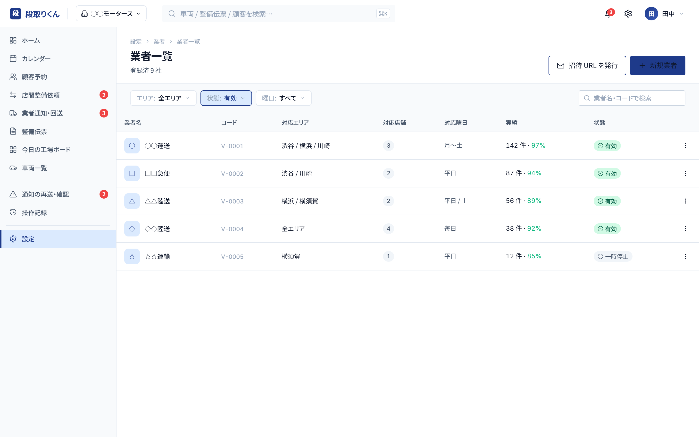
- 1失敗詳細の「業者を編集」リンクから業者一覧（F.10）へジャンプ
- 2該当業者の編集モーダルでメール欄を修正
- 3「保存」
通知失敗運用画面に戻り、手動再送
- 1失敗一覧に戻り、該当行の「再送」ボタンをクリック
- 2確認モーダル「修正後のメールアドレスに再送します」
- 3再送 → 状態「failed」→「sent」へ遷移
- 4配送ログに新しい試行が追加
S08 工場長が今日の作業をカンバンで把握
朝 8:30、工場長が出勤して今日の作業状況を確認します。整備士に作業を割り振り、遅延しそうな案件を早めに対処します。
- 工場長
- カンバン操作・進捗管理・整備士割当
- 整備士
- 自分の作業を更新（カードのステータス遷移）
全体フロー（5 ステップ）
- サイドナビ「今日の工場ボード」を開く
- 4 列カンバン（未着手 / 作業中 / 検査待ち / 完了）を俯瞰
- 担当整備士を割り当て
- 遅延カードを優先対応
- 完了報告で「完了」列へ移動
ステップ詳細
工場長日次ボードを開く
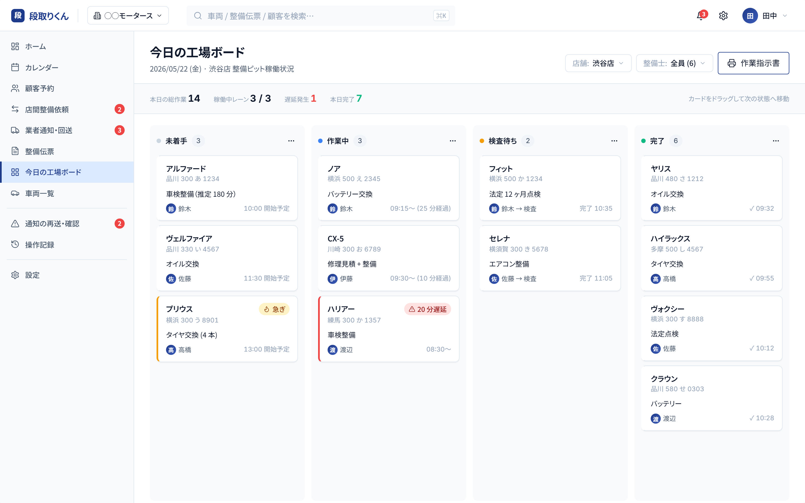
- 1サイドナビ「今日の工場ボード」（タイル + カンバンアイコン）
- 2上部に店舗フィルタ・整備士フィルタ・「作業指示書」印刷ボタン
- 3サマリ帯：「本日の総作業 14 / 稼働中レーン 3/3 / 遅延発生 1 / 本日完了 7」
- 4「カードをドラッグして次の状態へ移動」のヒント表示
4 列カンバンを俯瞰
- 14 列：未着手（3）/ 作業中（3）/ 検査待ち（2）/ 完了（6）
- 2各カード：車両名 / ナンバー / 作業内容 / 担当整備士 / 開始予定時刻 + 経過時間
- 3遅延カードは赤縁 + 「20 分遅延」バッジ + ⚠ アイコン
- 4急ぎ案件は「急ぎ」黄バッジで強調
- 5カードをドラッグで列移動 = ステータス遷移
担当整備士を割り当て
- 1未着手カードをクリック
- 2プルダウンで整備士を選択（佐藤 / 鈴木 / 高橋 / 渡辺 など）
- 3「担当を割り当て」ボタン
遅延カードを優先対応
- 1赤縁カード「08:30〜 開始 / 20 分遅延」の車検整備をクリック
- 2詳細パネル：所要時間 180 分、終了予定 14:30、お客様引取予定 14:00（差分 30 分）
- 3アクション：「整備士を変更」「他の作業を後回し」「お客様に連絡」
完了報告
- 1整備士または工場長が「完了」列へカードをドラッグ
- 2カードが「完了」列へ移動 + 完了時刻がスタンプ
- 3サマリ帯の「完了 7 → 8」にカウントアップ
- 4整備伝票に実績時刻が自動記録
3.経営層向け 機能サマリ
経営判断・システム選定の観点から段取りくんを 5 分で理解するためのサマリです。詳細な操作・画面は §2 業務シナリオ・§4 画面リファレンスを参照してください。
3.1 5 分でわかる段取りくん
段取りくんは 「整備の段取りに関わる全員」を 1 つのクラウドでつなぐシステムです。
- 本部・店長は経営 KPI と全店の稼働状況を 1 画面で把握
- 店舗スタッフは他店ピットの予約と業者依頼を電話なしで実行
- 業者はスマホで依頼を受け、対応可否・進捗・写真報告まで完結
- 顧客は 24 時間 Web で予約、電話受付の代行入力にも対応
- 工場長・整備士は今日の作業をカンバンで把握、実績を即記録
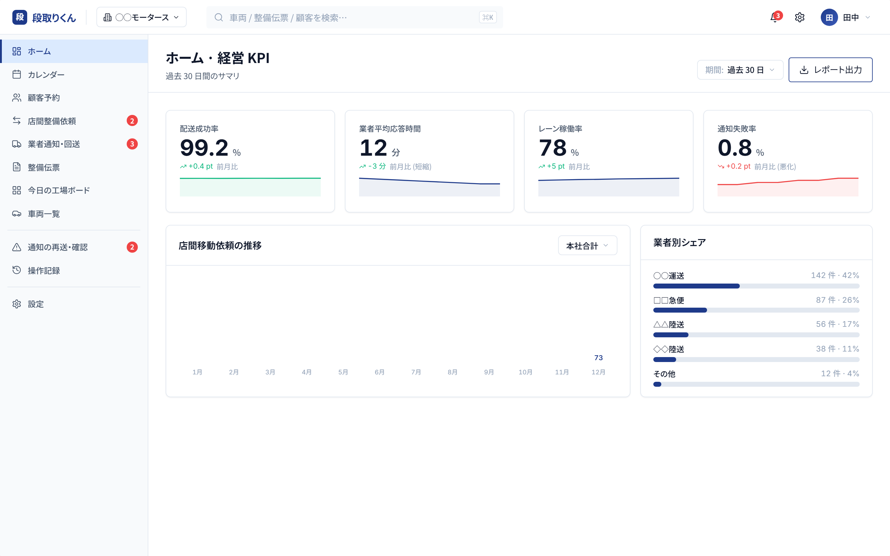
↑ 経営 KPI ダッシュボード（C.1+）。配送成功率・業者応答時間・稼働率を 30 日トレンドで可視化。
3.2 主要 KPI
段取りくんが可視化する 3 つの経営 KPI（モック値）:
失敗時は再送 + 運用画面で即把握
マイページで即時通知 + 督促
多店舗での空きピットを共有
※ 数値はデモ用の参考値です。実運用時の数値は計測対象期間と運用条件により変動します。
3.3 多店舗での見え方
店舗数が増えても破綻しない設計です。多店舗縮小ビューを使うと、12 店舗以上でも 1 画面に収まります。
各店舗の稼働状況・業者依頼件数・要対応バッジが横一行で表示され、本部視点で「いま手当てすべき店舗」が一目で分かります。
3.4 セキュリティとデータ保護
貴社専用のクラウド領域でデータを保管します。外部からのアクセス遮断、操作はすべて記録される設計です。
- アクセス制御
- 役割ごとに権限を細かく分離。最小権限の原則で運用
- 操作記録
- 誰がいつ何を変更したかを改ざん不可で記録（操作記録画面で閲覧可能）
- 個人情報保護
- 顧客情報は暗号化保管。保管期間は画面から設定可能
- 法令準拠
- 個人情報保護法・特定商取引法に基づく運用
4.画面リファレンス
段取りくんの全 50 画面を 6 領域に分けて網羅説明します。各画面は「画面の役割（1 段落）+ 主要機能（箇条書き）+ 想定ユーザー」の統一フォーマットです。スクリーンショットは主要画面 25 枚を掲載、その他はテキスト記述としています。
4.1 管理画面（14 画面）
本部管理者・店長・店舗スタッフ・工場長が日常的に使う中核画面群。
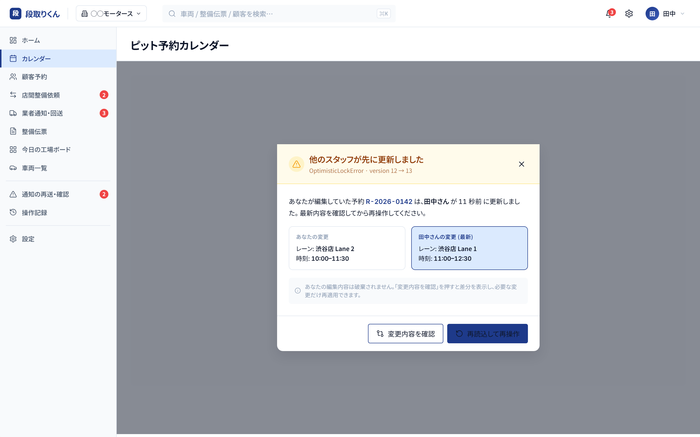
4.2 業者ポータル（7 画面）
回送業者向けの専用画面。スマホ最適化、片手操作前提。
4.3 顧客予約画面（10 画面）
顧客向けのモバイル予約フロー（6 ステップ）+ 予約後の確認・変更・キャンセル画面群。
4.4 設定画面（11 画面）
会社・店舗・レーン・業者・通知・権限などのマスター設定。本部管理者と一部は店長が操作。
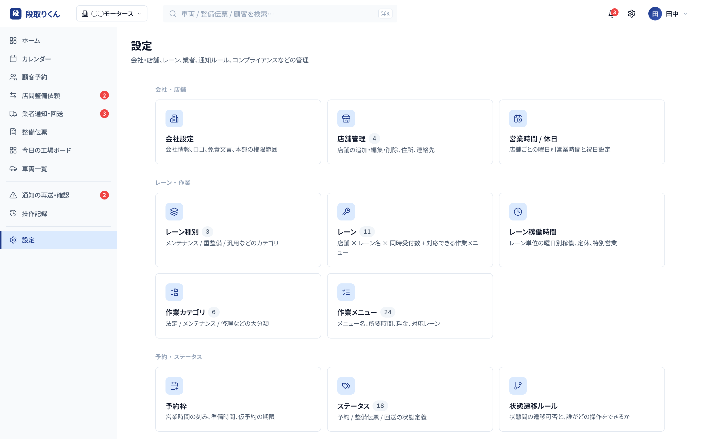
4.5 印刷物（3 種）
店舗・業者・ドライバーが現場で使う紙の帳票。PDF 出力と直接印刷の両対応。
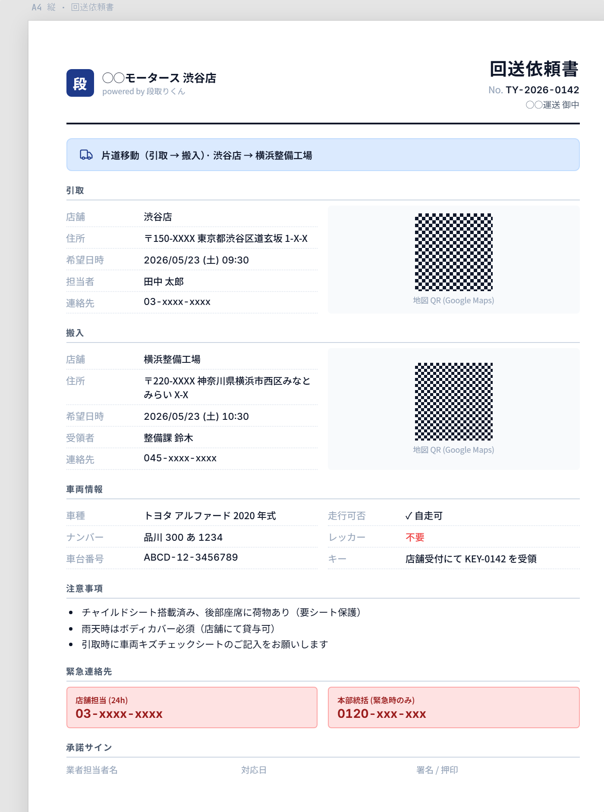
4.6 共通・モバイル（5 画面）
画面横断で使う共通コンポーネントとモバイル版のカタログ。
5.用語集
段取りくんで使われる主な業務用語とシステム用語の定義です。
- 整備伝票
- 1 件の整備案件を識別する伝票。車両 / 顧客 / 作業内容 / 担当者 / 入庫予定 / 実績 / 金額が紐付く中核データ。番号例：SV-2026-0089
- ピット
- 整備作業を行う作業スペース。1 店舗に複数あり、種別（メンテナンス / 重整備 / 汎用）と稼働時間が設定可能
- レーン
- ピット内の予約単位。同時に作業できる枠数（concurrent_capacity）を持つ
- 店間整備
- 自店にピット空きがない時、他店のピットで整備を行うこと。本システムの中核機能の 1 つ
- 店間移動
- 店間整備に伴う車両の物理的な移動。回送業者または陸送業者が担う
- 回送 / 陸送
- 回送 = 業者が自走して車両を運ぶ / 陸送 = キャリアカー等での運搬。本システムでは両者をまとめて扱う
- 仮予約
- 確定前の予約状態。設定で有効期限（例 30 分）を超えると自動失効
- 確定
- 予約確定。この時点で関連業者に通知が飛ぶ（仮予約時点では飛ばない）
- 作業中 / 完了
- 整備士が現場で更新するステータス。「次に何をやるか」のカンバンに連動
- 移動中
- 業者が車両を引取・搬入中の状態
- 移動パターン
- 店間移動の 4 種類：片道（引取→搬入）/ 往復（引取→搬入→返却）/ 引取のみ（廃車送り等）/ 三点（引取・搬入・返却が異なる店舗）
- 確定モード（auto / manual）
- 業者が「対応可」を返した時の店舗側挙動。auto = 自動確定 / manual = 店舗承認後に確定
- 走行可否
- 車両が自走可能か。不可の場合 tow_required（レッカー必要）が自動セットされ、業者通知にも明記
- 業者ポータル
- 回送業者向けの専用画面。社内ユーザーとは認証基盤上完全に分離
- 招待 URL
- 未登録の業者を案件単位で招待する仕組み。受諾と同時に業者アカウントが発行される
- 承諾証跡
- 業者「対応可」回答時に記録される送信時刻・IP・User-Agent・同意フラグ。トラブル時の責任分界証跡として機能
- 認証コード
- 顧客の予約完了時にメールで送信される 6 桁コード。本人確認用。有効期限 5 分
- 署名トークン URL
- 予約完了メールに記載される個別 URL。顧客は ID/Pass なしで自分の予約を確認・変更・キャンセル可能
- 本人確認 / KYC
- 顧客の身元確認。MVP では email 認証コード方式、将来 SMS や eKYC への拡張に対応
- 通知ルール
- 「いつ / 誰に / 何で送るか」の組み合わせ設定。設定画面から追加・編集可能
- 通知配送（outbox）
- 通知をデータベースに記録 → 配送ワーカーが順次送信する設計。失敗時はリトライ + 失敗一覧で可視化
- 同時更新の競合
- 複数スタッフが同じデータを同時編集した時の検出。後から保存しようとした人にはモーダルが出て、相手の変更内容を確認できる
- 操作記録
- 誰がいつ何を変更したかの全件記録。本部管理者のみ閲覧可。改ざん不可
- 役割 / 権限
- 本部管理者 / 店長 / 工場長 / 店舗スタッフ / 整備士 / 業者 / 顧客 の 7 役割。画面ごとの「閲覧 / 更新 / 作成」を細かく設定可能
- 状態の進み方ルール
- ステータスの遷移ルール。「仮予約 → 確定」「対応不可 → キャンセル」など、許可遷移を画面で定義
6.FAQ
よくいただく質問への回答です。
Q. 既存の業務システムや Excel との違いは何ですか？
段取りくんは 店間移動 + 業者連携を含む整備業務に特化した設計です。一般的な業務システムは整備伝票管理までは対応しますが、店間ピット共有や業者の自動通知・進捗追跡を 1 つにまとめている点が大きな違いです。
Excel では実現できない領域として、①リアルタイムの他店舗ピット空き状況参照、②業者への自動通知と進捗追跡、③同時編集の競合検出、④全操作の改ざん不可な記録、があります。
Q. 業者がスマホやパソコンを使えない場合はどうなりますか？
業者ポータルはスマホで動作するよう設計されていますが、業者の高齢化等で操作が難しい場合は以下の運用が可能です：
- 店舗スタッフが業者と電話でやり取りし、店舗側で 業者の代理進捗更新を行う
- 業者ごとに「通知方法」を email のみ、マイページのみ、両方から選択可能
- 回送依頼書 PDF を印刷して業者へ FAX 送付する運用も併用可能
業者ポータルの利用度合いに応じて段階的に移行できます。
Q. 顧客（特に高齢者）が Web 予約を使えない場合は？
顧客は Web 予約だけが手段ではありません。電話受付の顧客に対しては、店舗スタッフが 「電話受付モード」で代行入力します。代行入力された予約も同じデータベースで一元管理されるため、Web 経由でも電話経由でも同じ画面で管理できます。
S01 シナリオを参照してください。
Q. 多店舗（10 店舗以上）でも使えますか？
はい。多店舗縮小ビュー（C.2+）で 12 店舗以上を 1 画面表示できます。各店舗のフィルタ・縦並び表示・要対応バッジで本部視点の管理が破綻しません。
権限は店舗ごと・役割ごとに細かく設定でき、店長は自店舗のみ、本部管理者は全店舗、という分離も可能です。
Q. データはどこに保管されますか？セキュリティは？
貴社専用のクラウド領域でデータを保管します。外部からのアクセス遮断、すべての操作を改ざん不可で記録する設計です。
個人情報は暗号化して保管し、保管期間も画面から設定できます。個人情報保護法・特定商取引法に基づく運用に対応します。詳細は §3.4 セキュリティとデータ保護を参照。
Q. 業者が指示に従わなかった場合の責任はどうなりますか？
業者の「対応可」回答時に 送信時刻・IP アドレス・同意チェックを自動記録し、操作記録に残します。回送依頼書 PDF にも責任分界文言を印字するため、業務委託契約の証跡となります。
業者の進捗が引取予定 + 3 時間経過しても更新されない場合、店舗側にアラートが飛び、本部管理者にエスカレーションされます（S05 参照）。
Q. 通知（メール）が業者に届かない場合はどうなりますか？
段取りくんは 送信失敗を自動検出し、最大 5 回まで自動再送します。それでも失敗した場合は「通知の再送・確認」画面（C.8）に失敗一覧として表示され、運用担当者が原因（メアド誤り・プロバイダ障害等）を確認して手動再送できます。
連続失敗が一定数を超えると本部管理者にエスカレーション通知が飛びます。詳細は S07 シナリオを参照。
Q. 導入にはどのくらいかかりますか？
機能スコープにもよりますが、コア機能（ピット共有・店間整備・業者通知・顧客予約）の MVP リリースは 14〜20 週間が目安です。マスター設定の整備（業者・レーン・店舗情報）は導入準備期間に並行で進められます。
詳細は別途お見積もり時にご相談ください。
Q. 既存の整備伝票データや顧客データを移行できますか？
CSV エクスポート / インポート機能で既存データの取り込みが可能です。移行対象となる典型データ：顧客 / 車両 / 整備伝票 / 業者マスター / 作業メニュー。
既存システムによっては API 連携や個別変換ツールが必要な場合もあります。詳細は導入支援時に個別対応いたします。
Q. 障害が起きた場合のサポートは？
本資料の範囲では具体的なサポート SLA は確定していません。導入時に以下を別途お決めいたします：
- 一次対応の連絡先（メール / 電話）
- 対応時間帯（営業時間内 / 24 時間）
- 障害発生時の代替運用フロー（電話受付・紙ベース継続等）
- 復旧目標時間（RTO） / データ復旧目標時点（RPO）